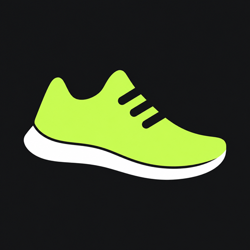
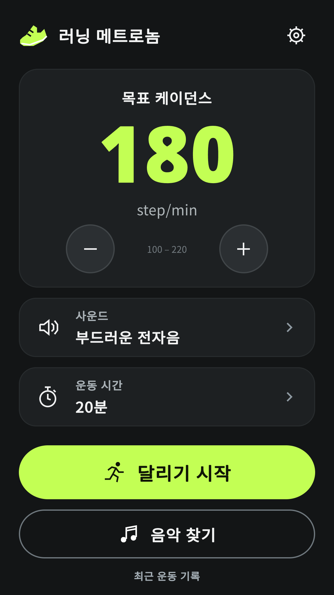
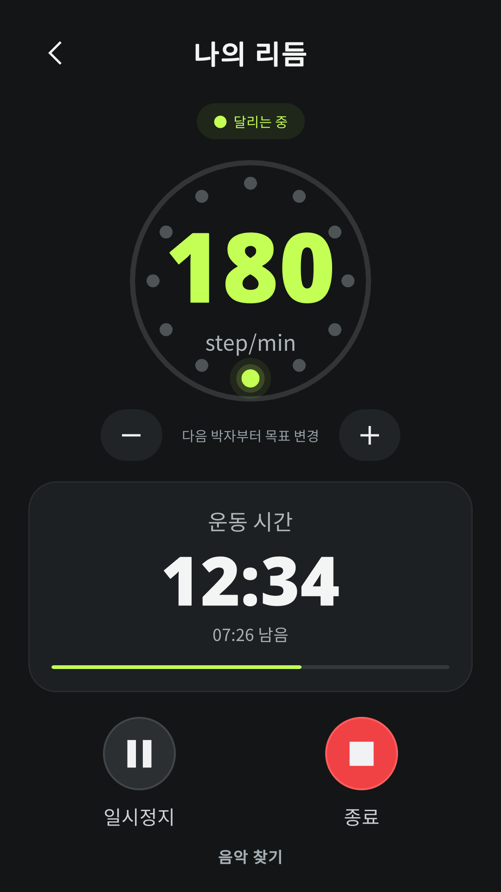
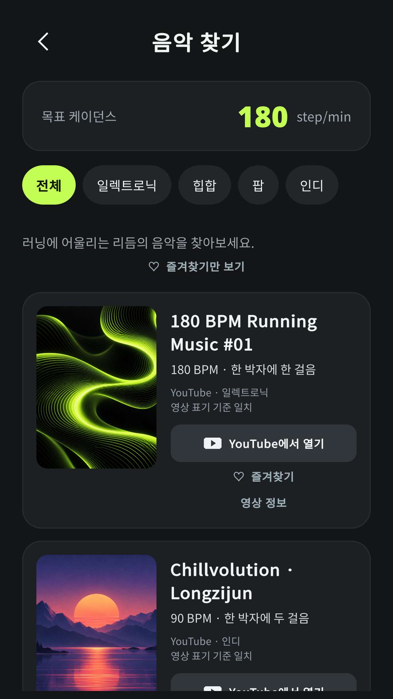
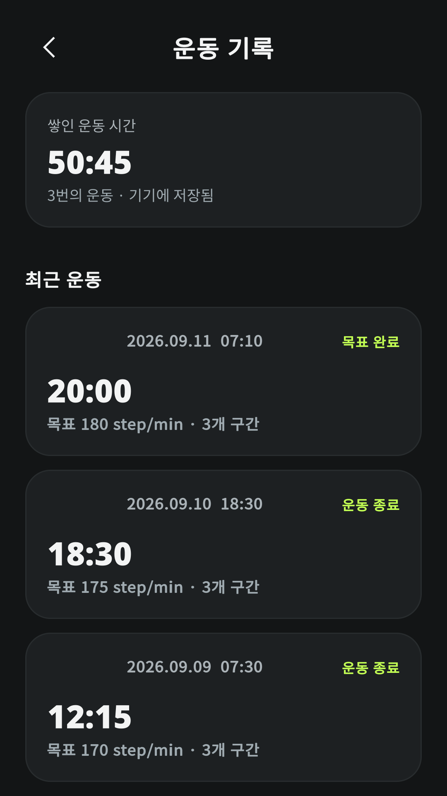
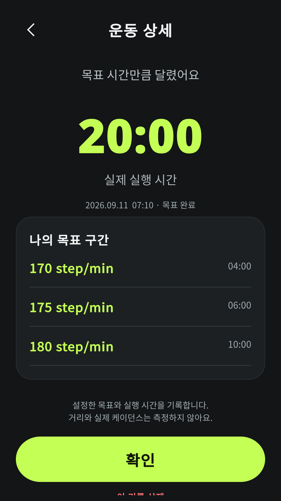
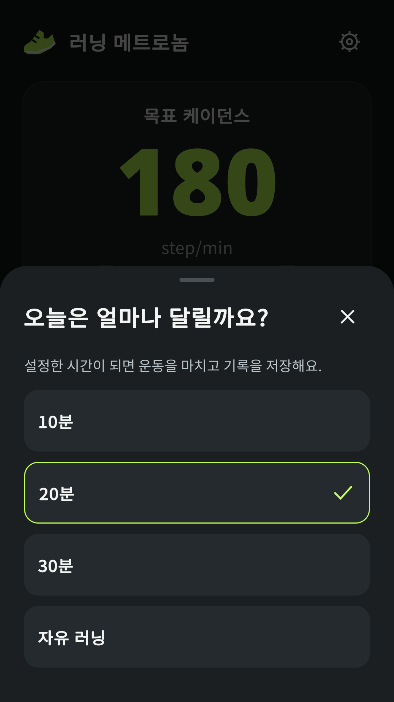
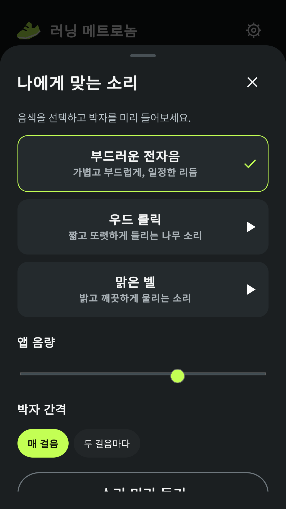

런비트 - 러닝 메트로놈RunBeat - Running Metronome
com.secondwindgames.runbeat
실제 앱 UI를 촬영했습니다. 운동 시간과 기록은 예시 데이터입니다. 클릭하면 PNG 원본을 엽니다.







아이콘 512 × 512 · 소개 배너 1024 × 500 · 스크린샷 7장
한글 등록 문구 · 영문 등록 문구 · 등록 안내